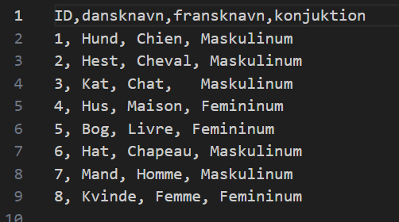
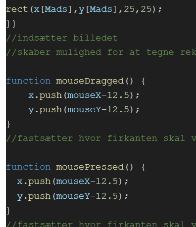

Vi skulle lave en hjemmeside der kunne bruges som quiz eller flashcard. Her skal vi kombinerer databaser med hjemmesideprogrammering.
Vi startede med at finde ud hvad vi gerne ville lave. Vi blev inspireret af quizlet, hvor vi har flashcards til at studere, danske og franske ord. Derfor lavede vi et regneark hvori der var vores primær nøgle, som var 1 til 5. Herefter skrev vi nogle attributer, til vores enititet. Man kan se regnearket her:

Her er der muligt at se fx: at primær nølge 1, har attributerne,
Efter at have fundet vores billede brugt vi lidt tid på at sætte det ind korrekt, men derefter kunne det rigtige begynde.
Vi valgte at jo mere højre vores mus var på billedet, jo mere intesent vil den røde del af alle pixels på billedet blive. Derefter valgte vi at jo længere ned musen var mere grøn blev de.
Efter vi havde implementeret dette fik vi noget feedback da andre prøvede og bruge det, hvor mange mente at de kunne være interessant at kunne tegne oven på billedet. Hvilket vi kan så på dette billede:

Her er det muligt at se de funktioner vi bruger til at både at vedligholde at en firkant bliver tegnet når der trykkes og at der bliver tegnet flere hvis man "dragger" musen rundt mens man holder musen nede.
Det er altså mouse x og y der er vores koordinater hvorefter vi indsætter en rectangle altså firkant.